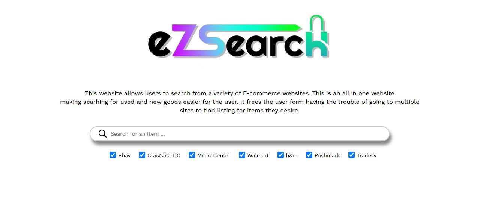
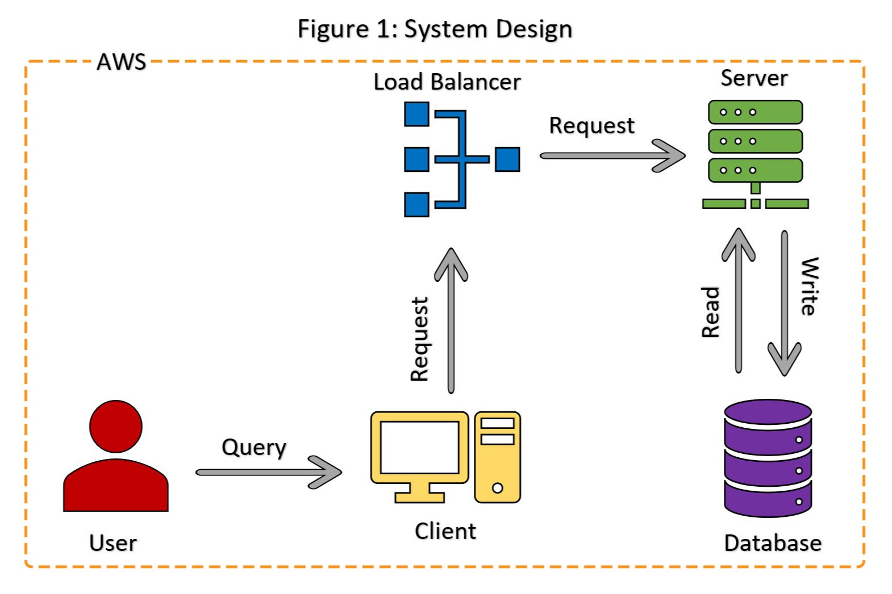

ezsearchonline.com
Ezsearchonline is a web-based application that allows users to search for used and new goods from multiple e-commerce websites in one place where they can be sorted as desired. The application is designed using HTML and CSS and is hosted on AWS with the backend programmed in JavaScript using Node.js framework and Cheerio API. The application is designed to scrape e-commerce websites using an HTML parser called Cheerio. The HTML parsed data is used to get individual items, and queries to the e-commerce sites are made using URL manipulation. This allows the application to retrieve data from multiple e-commerce websites and present it to the user in one place. The application also provides sorting options for the user to organize the data as they wish.

Application process walkthrough
1. The user interacts with the application through a web browser and sends an HTTP request to the Load Balancer.
2. The Load Balancer receives the HTTPS request and forwards it to the Web Server running on AWS.
3. The Web Server, which is programmed in Node.js and Express.js, handles the request and sends back the HTML, CSS, and JavaScript files to the user's browser.
4. The user interacts with the front-end through the web interface and sends REST API calls to the back-end.
5. The back-end, which is also programmed in Node.js and uses the Cheerio API, receives the API calls and parses the HTML data of the e-commerce websites.
6. The back-end then returns the relevant data to the front-end to be displayed to the user.
7. The application communicates with the e-commerce websites via URL manipulation to get the data needed for the user's search.
System Design & Architecture

The front-end of the application is built using HTML and CSS and is designed to be user-friendly and easy to navigate. The user inputs the item they wish to search for, and the application sends a request to the backend. The backend retrieves data from the selected e-commerce websites using the Cheerio API and returns the data to the front-end, which displays the data to the user in a table format.
The back-end of the application is programmed in JavaScript using the Node.js framework. The Cheerio API is used to scrape the e-commerce websites, and the data is processed to remove any irrelevant information. The processed data is then returned to the front-end to be displayed to the user.
The application is hosted on AWS, which provides a scalable and reliable platform for the application. The use of AWS also allows the application to be easily deployed and managed.